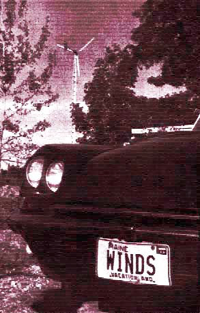

(AND BRAND-NEW BUSINESS)
Just a year ago, in MOTHER NO. 18, we ran a one-page report on Henry Clews and his 50-acre farmstead way up in the state of Maine. Nothing really unusual about that . . . except for the fact that Hank was supplying all his family's electrical needs with the "juice" produced by a 2,000-watt, 120-volt Quirk's windplant imported from Australia. The little article also mentioned that Clews was the newly appointed Quirk's agent for all of the state of New York and advised everyone interested in buying a wind-driven generator to contact Henry. We even stated that, if we all sent Hank a buck, we'd soon force him to print up a little booklet on the subject.
Well, that one small mention-it seems-put Henry Clews in business. He did write the booklet (it's still available for $1.00) and has since become an authorized agent for least one domestic manufacturer windplants (DYNA Technology, Inc. of Sioux City, Iowa) and another foreign producer of such equipment (ELEKTRO G.M.b.H. of Winterthur, Switzerland).
Clews has become so associated with wind power in the Pine Tree State, in fact, that his "company" car now sports the special license plan shown in the accompanying photograph. And, by the way, that's a brand-new 6,000-watt ELEKTRO unit behind the vehicle.
Hank will be giving you a more complete report on his success in the next issue of MOTHER. He'll also include a brief rundown of wind generators currently in production throughout the world (don't get too excited . . . the list is a short one). In the meantime, if you want to know more about the current state of the art in the field, send a buck to Henry Clews, SOLAR WIND RFD 2, East Holden, Maine 04429. Tell him MOTHER sent you.
|
 Our ""company car"" in the driveway with the new 6,000-watt wind generator behind. Maine winds are good! |
|
|